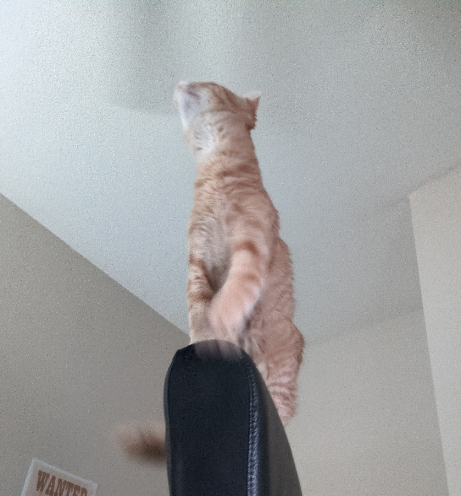
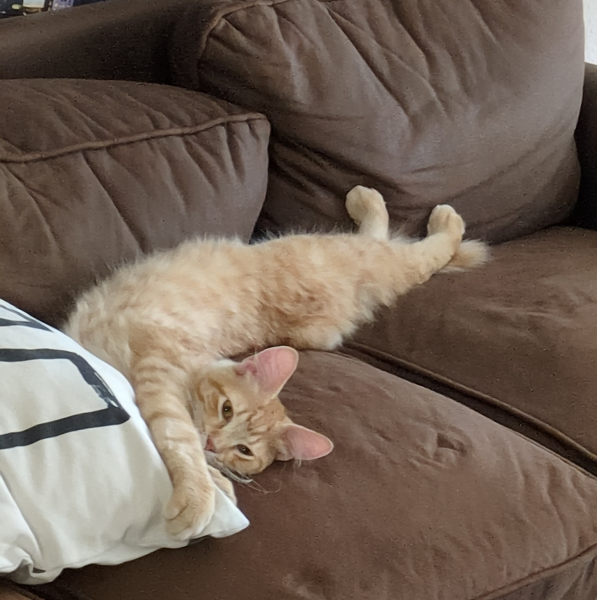
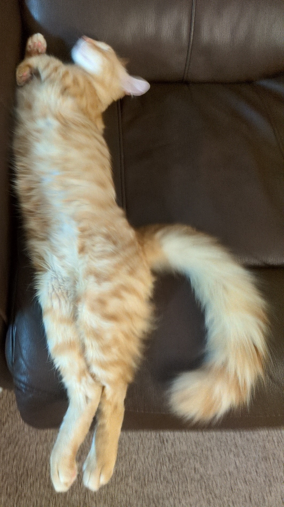
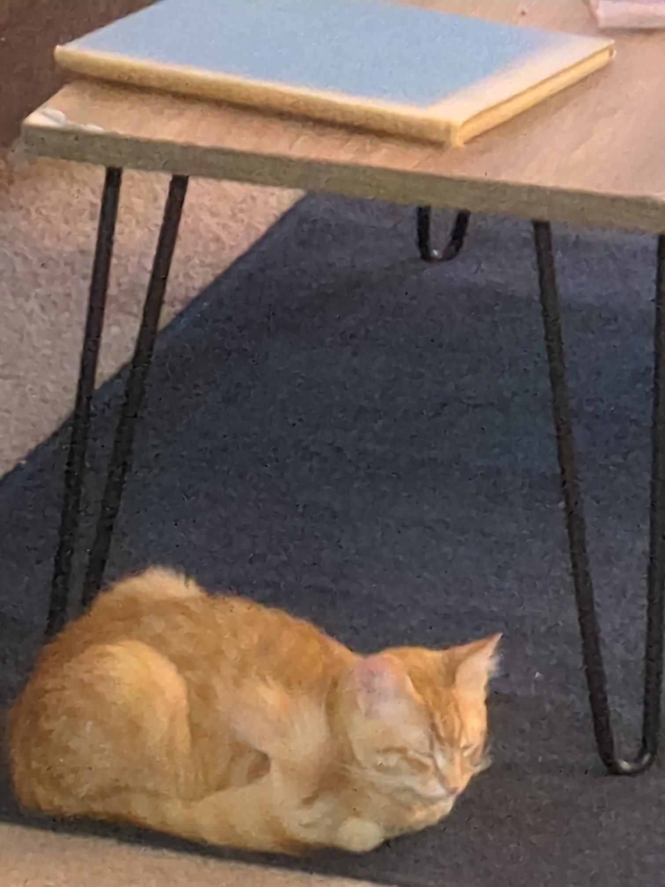
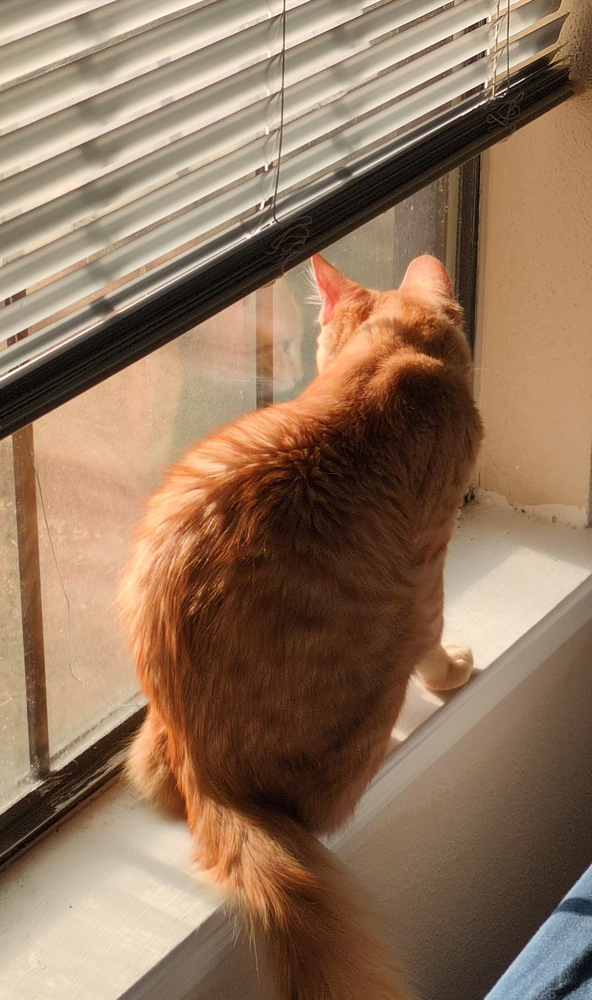
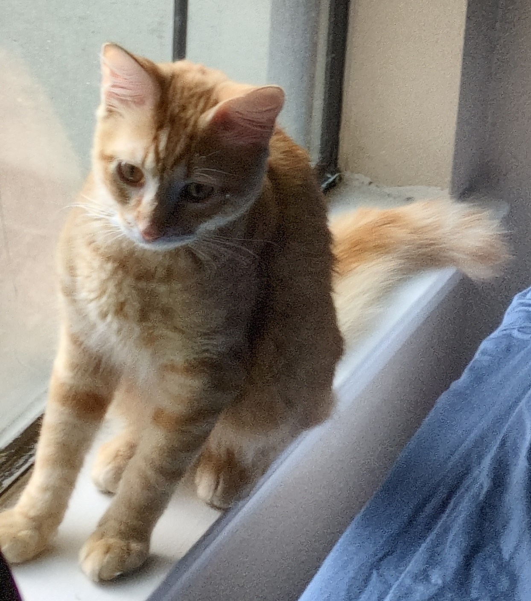
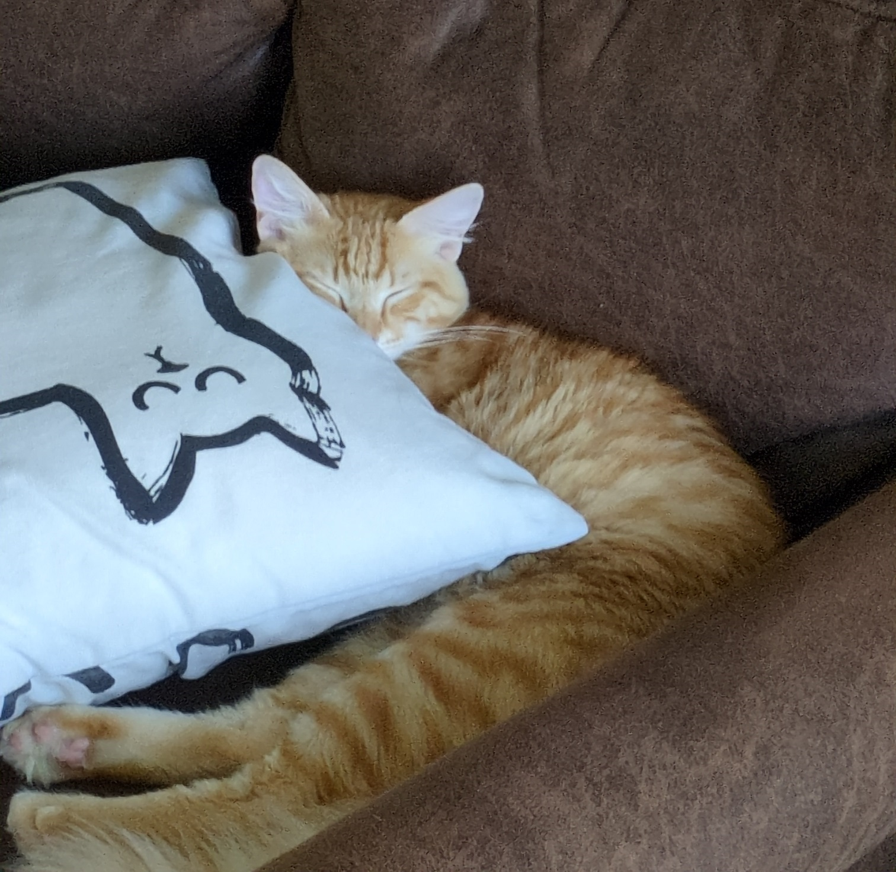
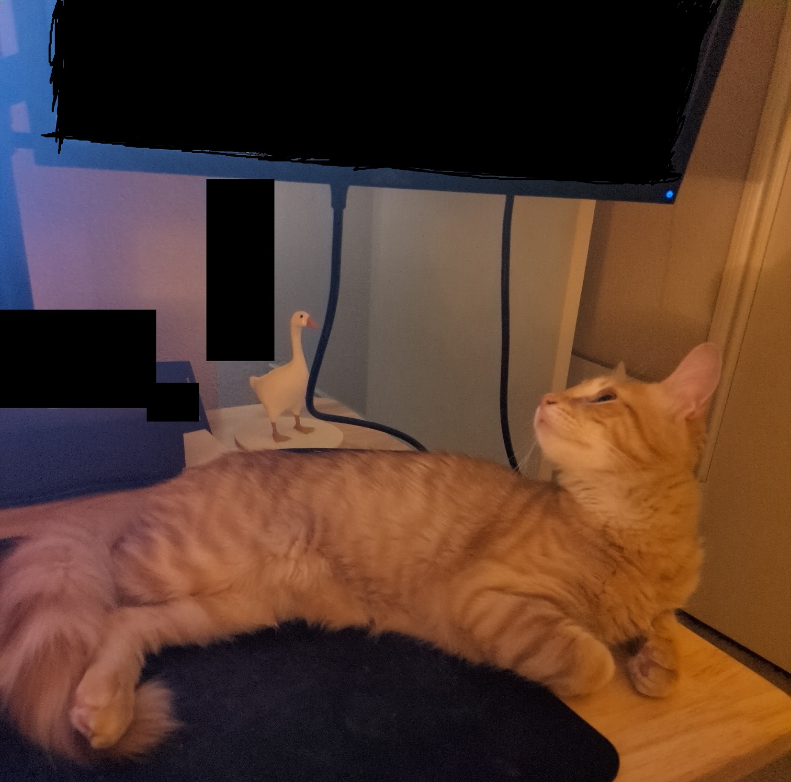

Atom
I know you can already see the cat images, go scroll down.
Atom the kitty cat
Atom is the cat in my life (yes his name is said and spelled like atom as in physics), he belongs to my roommate. I have much to say, but to spare you the trouble, here is a photo dump of my favorites right now. You can view all of the pictures here. You can also view it in the "cat gallery" page, but I don't yet have a web address specifically for Atom.












I really like the ones where he's by the window, they turned out really well. Too bad that the world will never see a picture of him in my room again, he is not allowed anymore.
Hardware is so expensive :(
I currently have a Ryzen 5 5600X and a GTX 3070, both about six years old now. They still do me fine since I don't have any interest in any new (trash and poorly optimized) AAA games.
Still, I am noticably CPU-bound in some tasks and games. I'm not yet quite ready to replace anything, but I would definitely be in the market for a good deal.
Replacing the CPU is going to be a pain in the ass, though, since newer CPUs are starting to drop DDR4 RAM support, which entails buying DDR5 RAM... ♥♥♥♥.
That is, of course, on top of the pain of having to swap the motherboard too.
My thought with it, too, is why let it go to waste. Run some servers on it, ♥♥♥♥ with Gentoo or some stupid ♥♥♥♥.
Doing this would realistically only cost me buying a case, PSU, and maybe a ♥♥♥♥-♥♥♥ ancient GPU, and I can donate it my currently little-used HDD.
I pay a decent bit on servers already, doing this would probably be a net monetary gain within two years, easily less if I get a good deal. And of course, the experience would be great too.
Oh, and how I would I love to hear my hard drive fire up more than the once a week it currently is ^_^
At the current moment, I would even like an SSD to put a linux boot on, to finally make the switch on my desktop.
I would do it now, but I want to keep my Windows boot and data intact, which is difficult with how close my drive is to being full.
It would also inevitably require ♥♥♥♥♥♥♥ with the partitions on the drive and juggling data back and forth--
it's just too ♥♥♥♥♥ of a solution. I wish I could just buy an SSD,
but like man its expensive.
Remember when a 2TB SSD was only a bit over $100? Damn.